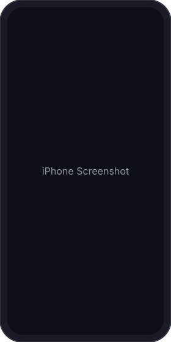
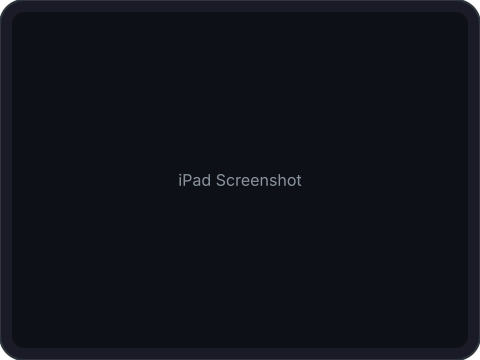

Your AI Agents, Always Within Reach.
A tmux-powered remote terminal manager, built for iPhone, iPad & modern browsers.
DownloadSessions, windows, panes, scroll history, copy mode — everything tmux offers, right at your fingertips. Your AI Agents never miss a beat.
A fluid, responsive tmux experience built specifically for iPhone and iPad. Check on your agents from anywhere — no laptop required.
The full QuickTUI experience, right in your browser. Any platform, any device — your agents are always one tab away.
A custom quick-access toolbar that speaks tmux. Cut through repetitive keystrokes and keep your AI Agent workflows moving fast.

iPhone
iPadcurl -fsSL https://quicktui.ai/install.sh | sh